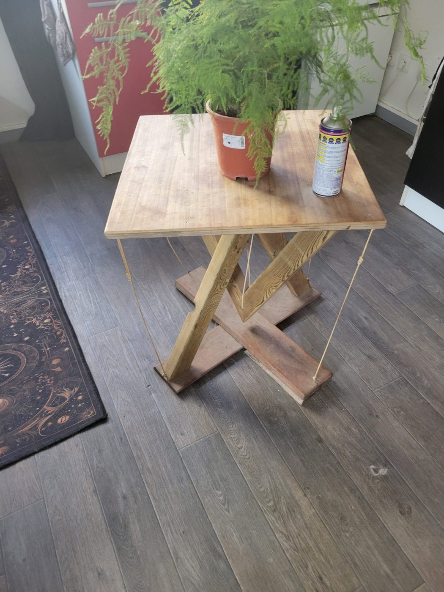

Tout commence par une planche de trop.
Il n'y avait pas d'atelier. Il y avait une cuisine, un tapis, un pot de fougère, et quatre planches de pin qu'il fallait bien faire tenir ensemble.
La table bancale
La première table n'a pas été dessinée. Elle a été coupée. Un plateau de lamellé de hêtre récupéré d'un plan de travail, quatre chutes de pin de 85 millimètres, deux chutes plus courtes pour les patins. Pas de vis apparentes, parce qu'il n'y avait pas envie de vis. Deux planches dressées en triangle sur les patins, pointe en haut. Deux autres vissées sous le plateau, pointe en bas. Les deux triangles se croisent sans se toucher : il manquait quelque chose pour que ça tienne.
Une corde entre les deux pointes, et le plateau s'est mis à flotter, porté par du chanvre. Puis quatre cordes des coins du plateau aux bouts des patins, un nœud à chaque extrémité, tendues. Et le mouvement s'est arrêté net, comme un instrument qu'on accorde. Ça s'appelle la tenségrité — l'intégrité par la tension — et ça tient.
Ce qui tient, tient par le vide.
Ce n'était pas une phrase, c'était un constat. Le bois pousse, la corde retient, et la table n'a besoin de rien d'autre. Toutes les pièces de l'atelier sont nées de cette seconde-là.

Ce qu'on refuse
On refuse les quatre pieds. Pas par principe : parce qu'ils sont déjà partout, et qu'un objet qui ressemble à tous les autres n'a pas de raison d'exister. On refuse le lisse, le poncé-jusqu'à-disparaître, le vernis qui fait du bois une photo de bois. Les nœuds restent. Les traces de scie restent sur les chants des patins. Le pin est brossé pour creuser le veinage, pas pour le cacher.
On refuse aussi la série. Chaque table est tracée sur la planche qu'on a sous la main, et la planche décide : un nœud au mauvais endroit déplace une corde, une largeur inhabituelle change l'angle des triangles. Deux tables ne se ressemblent jamais tout à fait. C'est le prix et c'est le cadeau.
Les matières
Le bois. Pin des Landes pour les pièces brutes, chêne et noyer de scieries françaises pour les plateaux qui doivent durer un siècle, olivier pour ce qu'il a de fou dans la veine, frêne brûlé à la flamme puis brossé pour les pièces sombres. Tout est massif, tout est huilé à l'huile dure, jamais verni.
Les cordes. Chanvre naturel de corderie, lin teint en noir, bordeaux ou vert mousse, ou câble de laiton gainé pour les versions qui portent vraiment. Chaque corde se retend en dix secondes au nœud de tension, et un jeu de rechange part avec chaque table.
La céramique. Les damiers d'échecs sont émaillés et cuits par une céramiste, carreau par carreau : vert bouteille et crème, avec les variations de cuisson qu'on ne corrige pas. Ils sont enchâssés à fleur du bois, dans un filet de laiton.
Le laiton. Œillets, patins, filets, chaînettes des potagers. Brossé, jamais verni, il se patine avec la maison.
Le potager
La fougère de la première photo n'était pas un accessoire. L'atelier a toujours eu des plantes sur les tables, et un jour il a fallu la place. Alors le bac est monté au plafond, au bout de quatre chaînettes de laiton, avec un palan de suspension d'atelier, de ceux qu'on tire d'une main. Et il est redescendu à l'heure du repas, à portée de main, pour cueillir le basilic.
Depuis, le potager suspendu est l'autre famille de l'atelier : au-dessus de la table, intégré dans le plateau, ou en cascade devant une fenêtre. Des meubles qui vivent, au sens propre.
Comment ça se passe
Vous composez une table dans le configurateur, ou vous écrivez. Sous quarante-huit heures, vous recevez un devis et un rendu de votre pièce. Puis l'atelier choisit la planche, vous envoie une photo du bois avant la coupe, et fabrique. Six à dix semaines, selon le format et la céramique. La table part dans une caisse de bois, ou vous venez la chercher, et on boit un café.